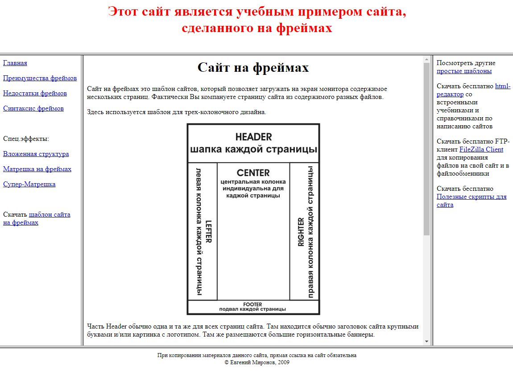
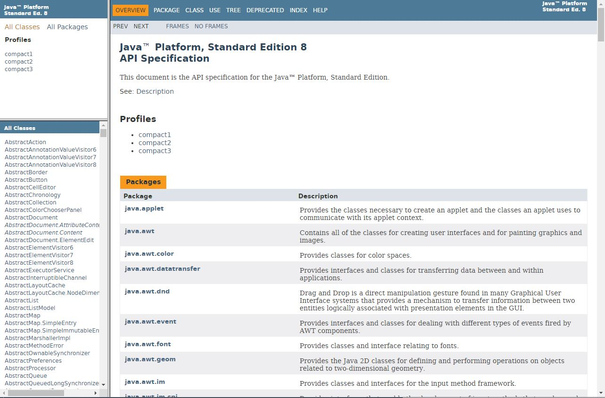
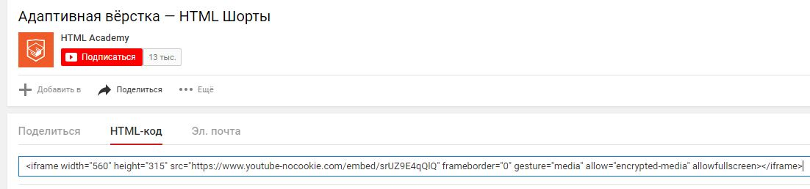
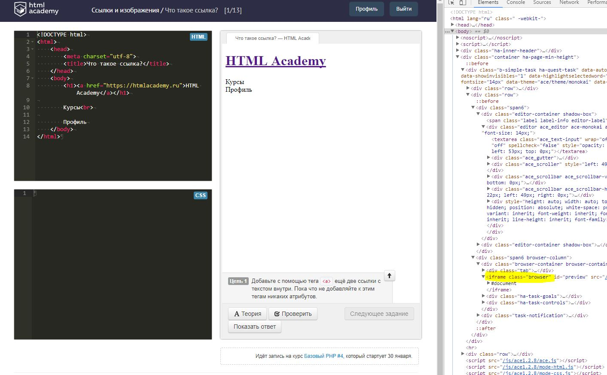

Iframe или inline frame - объект, который позволяет загружать в область определенного размера какие-либо другие внешние (независимые) объекты: будь-то отдельная самостоятельная страница или, например, видео с youtube.
Главное преимущество в том, что внутри фрейма будет отображаться внешний документ в своем исходном виде со своими стилями и прочими атрибутами. По сути, это будет, в какой-то мере, “браузер в браузере”.
Iframe - объект в спецификации HTML5 и является естественным развитием frame, frameset из более старых спецификаций HTML. Сейчас frame и frameset не используются и отсутствуют в HTML5, но вы должны быть прекрасно с ними знакомы. Не так давно повальное количество сайтов создавались на фреймах.
Сейчас использование фреймов - это в определенном смысле анахронизм, поскольку есть намного более продвинутые и удобные инструменты для получения желаемых результатов.
Использование фреймов нежелательно, поскольку такой сайт будет плохо индексироваться поисковиками, будет невозможно скопировать ссылку с текущим состоянием страницы, да и в целом, возможности по кастомизации стиля такого сайта весьма скудны.
Но вы всё ещё можете встретить сайты с подобной структурой. Например, на сайте той же Oracle все справочные материалы оформлены с помощью фреймов:
Кроме сайтов, структура фреймов использовалась и используется, например, в тех же “справках” к разным программам, которую можете получить, нажав F1.
В современной спецификации HTML5 на смену старым фреймам пришёл iframe. Это инлайновый (строчный) элемент с замещаемым контентом со всеми последствиями этого. Например, ближайший аналог - это img.
Поскольку iframe подразумевает загрузку какого-то внешнего контента (страницы или видео), обязательным атрибутом являет src. Но главное отличие от того же img в том, что iframe - это парный тэг.
В целом, многие атрибуты iframe унаследовал от строчных элементов с замещаемым контентом (как, опять же, в том же img). Вот типичные атрибуты этого тэга:
Если размеры контента превышают заданные размеры самого фрейма, то автоматически появляются полосы прокрутки. Как-либо их настроить нельзя, максимум, можно просто отключить.
На многих сайтах вы можете встретить встроенное видео youtube. Это достигается как раз с помощью iframe. На портале можно запросто скопировать код нужного видео:
При вставке этого кода видео будет выглядеть примерно так:
Кроме этого, без iframe не обойтись в специфических случаях, если необходимо достичь определенного результата. К примеру, в туториалах HTML Academy также используется этот объект:
Но без особой надобности лучше, конечно, обходиться без iframe и использовать другие, более прогрессивные инструменты.
На htmldog.com в описание iframe вы вообще можете прочитать следующий текст:
B. A. says iframe is clunky, not funky, fool.
Murdock says don’t use it as a cheap shortcut — there’s usually a better solution!
Hannibal smiles through yellow teeth and says it can cause problems with performance, maintenance, SEO, accessibility, and a plan coming together.
Face is being treated for the clap.